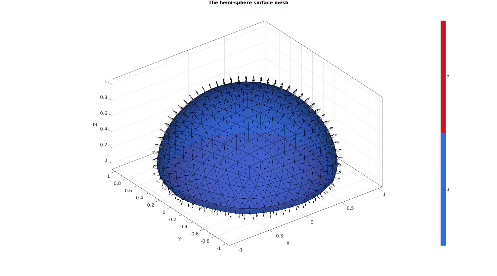

DEMO_febio_0031_blob_shear_contact
Below is a demonstration for:
- Building geometry for a hemi-spherical blob with tetrahedral elements which is being sheared by a rigid wall. This demo consists off:
- Defining the boundary conditions
- Coding the febio structure
- Running the model
- Importing and visualizing the displacement results
Contents
- Keywords
- Plot settings
- Control parameters
- Creating model geometry and mesh
- Creating rigid body ground plate
- Creating rigid body shear surface
- Join model node sets
- Get contact surfaces
- Defining the FEBio input structure
- Quick viewing of the FEBio input file structure
- Exporting the FEBio input file
- Running the FEBio analysis
- Import FEBio results
Keywords
- febio_spec version 4.0
- febio, FEBio
- indentation
- contact, sliding, sticky, friction
- rigid body constraints
- tetrahedral elements, tet4
- triangular elements, tri3
- slab, block, rectangular
- sphere
- static, solid
- hyperelastic, Ogden
- displacement logfile
- stress logfile
clear; close all; clc;
Plot settings
fontSize=15; faceAlpha1=0.8; faceAlpha2=0.3; markerSize=40; lineWidth=3;
Control parameters
% Path names defaultFolder = fileparts(fileparts(mfilename('fullpath'))); savePath=fullfile(defaultFolder,'data','temp'); % Defining file names febioFebFileNamePart='tempModel'; febioFebFileName=fullfile(savePath,[febioFebFileNamePart,'.feb']); %FEB file name febioLogFileName=[febioFebFileNamePart,'.txt']; %FEBio log file name febioLogFileName_disp=[febioFebFileNamePart,'_disp_out.txt']; %Log file name for exporting displacement % febioLogFileName_force=[febioFebFileNamePart,'_force_out.txt']; %Log file name for exporting force % Hemi-sphere parameters hemiSphereRadius=1; nRefine=2; closeOption=1; smoothEdge=1; % Ground plate parameters plateRadius=2*hemiSphereRadius; % Probe parameters probeWidth=3*hemiSphereRadius; filletProbe=0.25; %Fillet radius % Define probe displacement probeDisplacement=hemiSphereRadius*2; probeOverlapFactor=0.4; % Material parameter set c1=1e-3; %Shear-modulus-like parameter m1=2; %Material parameter setting degree of non-linearity k_factor=10; %Bulk modulus factor k=c1*k_factor; %Bulk modulus % FEA control settings numTimeSteps=30; max_refs=25; %Max reforms max_ups=0; %Set to zero to use full-Newton iterations opt_iter=10; %Optimum number of iterations max_retries=25; %Maximum number of retires symmetric_stiffness=0; min_residual=1e-20; step_size=1/numTimeSteps; dtmin=(1/numTimeSteps)/100; %Minimum time step size dtmax=(1/(numTimeSteps)); %Maximum time step size runMode='external';% 'internal' or 'external' %Contact parameters contactPenalty=1; laugon=0; minaug=1; maxaug=10; fric_coeff=0.01; max_traction=0;
Creating model geometry and mesh
% Create hemi-sphere mesh [F_blob,V_blob,C_blob]=hemiSphereMesh(nRefine,hemiSphereRadius,1); pointSpacingBlob=mean(patchEdgeLengths(F_blob,V_blob)); %Smoothen edges if smoothEdge==1 %Get rigid region ind=1:1:size(V_blob,1); %Indices for all nodes indRigid=find(ismember(ind,F_blob(C_blob==2,:)) & ~ismember(ind,F_blob(C_blob==1,:))); %Indices for new bottom surface nodes %Smoothing cPar.Method='HC'; cPar.n=250; cPar.RigidConstraints=indRigid; [V_blob]=patchSmooth(F_blob,V_blob,[],cPar); %Fix color data with new bottom surface C_blob=ones(size(C_blob)); C_blob(all(ismember(F_blob,indRigid),2))=2; end
Visualize hemi-sphere surface
cFigure; hold on; gtitle('The hemi-sphere surface mesh',fontSize); gpatch(F_blob,V_blob,C_blob,'k',0.85); patchNormPlot(F_blob,V_blob); axisGeom(gca,fontSize); colormap(gjet); icolorbar; camlight headlight; drawnow;
Using tetgen to create a tetrahedral mesh
% Tetgen input structure inputStruct.stringOpt='-pq1.2AaY'; inputStruct.Faces=F_blob; inputStruct.Nodes=V_blob; inputStruct.holePoints=[]; inputStruct.faceBoundaryMarker=C_blob; %Face boundary markers inputStruct.regionPoints=getInnerPoint(F_blob,V_blob); %region points inputStruct.regionA=tetVolMeanEst(F_blob,V_blob); inputStruct.minRegionMarker=2; %Minimum region marker % Create tetrahedral mesh using tetGen [meshOutput]=runTetGen(inputStruct); %Run tetGen % Access model element and patch data Fb_blob=fliplr(meshOutput.facesBoundary); Cb_blob=meshOutput.boundaryMarker; V_blob=meshOutput.nodes; E_blob=meshOutput.elements;
%%%%%%%%%%%%%%%%%%%%%%%%%%%%%%%%%%%%%%%%%%%%% --- TETGEN Tetrahedral meshing --- 20-Apr-2023 11:35:54 %%%%%%%%%%%%%%%%%%%%%%%%%%%%%%%%%%%%%%%%%%%%% --- Writing SMESH file --- 20-Apr-2023 11:35:54 ----> Adding node field ----> Adding facet field ----> Adding holes specification ----> Adding region specification --- Done --- 20-Apr-2023 11:35:54 --- Running TetGen to mesh input boundary--- 20-Apr-2023 11:35:54 Opening /mnt/data/MATLAB/GIBBON/data/temp/temp.smesh. Delaunizing vertices... Delaunay seconds: 0.002067 Creating surface mesh ... Surface mesh seconds: 0.000757 Recovering boundaries... Boundary recovery seconds: 0.000926 Removing exterior tetrahedra ... Spreading region attributes. Exterior tets removal seconds: 0.00028 Recovering Delaunayness... Delaunay recovery seconds: 0.000508 Refining mesh... 634 insertions, added 526 points, 16457 tetrahedra in queue. 211 insertions, added 164 points, 19804 tetrahedra in queue. 281 insertions, added 193 points, 22682 tetrahedra in queue. 374 insertions, added 195 points, 19304 tetrahedra in queue. 499 insertions, added 99 points, 452 tetrahedra in queue. Refinement seconds: 0.022635 Smoothing vertices... Mesh smoothing seconds: 0.042211 Improving mesh... Mesh improvement seconds: 0.00171 Writing /mnt/data/MATLAB/GIBBON/data/temp/temp.1.node. Writing /mnt/data/MATLAB/GIBBON/data/temp/temp.1.ele. Writing /mnt/data/MATLAB/GIBBON/data/temp/temp.1.face. Writing /mnt/data/MATLAB/GIBBON/data/temp/temp.1.edge. Output seconds: 0.014534 Total running seconds: 0.085729 Statistics: Input points: 476 Input facets: 948 Input segments: 1422 Input holes: 0 Input regions: 1 Mesh points: 1662 Mesh tetrahedra: 8647 Mesh faces: 17768 Mesh faces on exterior boundary: 948 Mesh faces on input facets: 948 Mesh edges on input segments: 1422 Steiner points inside domain: 1186 --- Done --- 20-Apr-2023 11:35:54 %%%%%%%%%%%%%%%%%%%%%%%%%%%%%%%%%%%%%%%%%%%%% --- Importing TetGen files --- 20-Apr-2023 11:35:54 --- Done --- 20-Apr-2023 11:35:54
Visualize blob mesh
hFig=cFigure; subplot(1,2,1); hold on; gpatch(Fb_blob,V_blob,Cb_blob,'k',1); patchNormPlot(Fb_blob,V_blob); axisGeom(gca,fontSize); colormap(gjet); icolorbar; camlight headlight; hs=subplot(1,2,2); hold on; title('Cut view of solid mesh','FontSize',fontSize); optionStruct.hFig=[hFig hs]; gpatch(Fb_blob,V_blob,'kw','none',0.25); meshView(meshOutput,optionStruct); axisGeom(gca,fontSize); drawnow;

Creating rigid body ground plate
%Get outer surve of ground surface [Eb]=patchBoundary(Fb_blob(Cb_blob==2,:)); indCurveBottom=edgeListToCurve(Eb); indCurveBottom=indCurveBottom(1:end-1); % Derive point spacing for plate pointSpacingPlate=pointSpacingBlob; % Compose outer curve of the plate nPlateCurve=ceil((2*pi*plateRadius)/pointSpacingPlate); t=linspace(0,2*pi,nPlateCurve); t=t(1:end-1); x=plateRadius.*sin(t); y=plateRadius.*cos(t); Vp_outer_curve=[x(:) y(:)]; % Copy inner curve from the hemi-sphere Vp_inner_curve=V_blob(indCurveBottom,[1 2]); % Create mesh out outer region regionCell={Vp_outer_curve,Vp_inner_curve}; [F_plate,V_plate]=regionTriMesh2D(regionCell,pointSpacingPlate,0,0); V_plate(:,3)=0; %Add z-direction % Copy mesh for inner region [F_plate_inner,V_plate_inner]=patchCleanUnused(fliplr(Fb_blob(Cb_blob==2,:)),V_blob); [F_plate,V_plate,C_plate]=joinElementSets({F_plate,F_plate_inner},{V_plate,V_plate_inner}); [F_plate,V_plate]=mergeVertices(F_plate,V_plate); center_of_mass_plate=mean(V_plate,1);
Visualizing plate mesh
cFigure; hold on; gtitle('The plate surface mesh',fontSize); gpatch(Fb_blob,V_blob,'kw','none',0.5); gpatch(F_plate,V_plate,C_plate,'k',1); patchNormPlot(F_plate,V_plate); axisGeom(gca,fontSize); colormap(gjet); icolorbar; camlight headlight; drawnow;


Creating rigid body shear surface
pointSpacingProbe=pointSpacingBlob/2; %Sketching side profile x=[-hemiSphereRadius hemiSphereRadius hemiSphereRadius]-hemiSphereRadius*2; y=[0 0 0]; z=[hemiSphereRadius*(1-probeOverlapFactor) hemiSphereRadius*(1-probeOverlapFactor) hemiSphereRadius*1.5]; V_probe_curve_sketch=[x(:) y(:) z(:)]; %Fillet sketch np=100; %Number of points used to construct each fillet edge [V_probe_curve]=filletCurve(V_probe_curve_sketch,filletProbe,np,0); numPointsProbeCurve=ceil(max(pathLength(V_probe_curve))/pointSpacingProbe); [V_probe_curve] = evenlySampleCurve(V_probe_curve,numPointsProbeCurve,'pchip',0); % Extruding curve % controlParametersExtrude.pointSpacing=pointSpacingProbe; controlParametersExtrude.depth=hemiSphereRadius*2.5; controlParametersExtrude.numSteps=ceil(controlParametersExtrude.depth/pointSpacingProbe); controlParametersExtrude.numSteps=controlParametersExtrude.numSteps+iseven(controlParametersExtrude.numSteps); %Force uneven controlParametersExtrude.patchType='tri'; controlParametersExtrude.dir=0; controlParametersExtrude.n=[0 1 0]; controlParametersExtrude.closeLoopOpt=0; [F_probe,V_probe]=polyExtrude(V_probe_curve,controlParametersExtrude); F_probe=fliplr(F_probe); %Invert face orientation so normals point to blob center_of_mass_probe=mean(V_probe,1);
Visualizing probe mesh
cFigure; hold on; title('The probe surface mesh','fontSize',fontSize); gpatch(Fb_blob,V_blob,'kw','none',0.5); gpatch(F_plate,V_plate,'kw','none',0.5); hl(1)=plotV(V_probe_curve_sketch,'k.-.','lineWidth',3,'MarkerSize',25); hl(2)=plotV(V_probe_curve,'r-','lineWidth',3,'MarkerSize',25); hl(3)=gpatch(F_probe,V_probe,'gw','k',1); legend(hl,{'Sketched probe curve','Rounded probe curve','Probe surface mesh'}); clear hl; axisGeom(gca,fontSize); camlight headlight; drawnow;

Join model node sets
V=[V_blob; V_plate; V_probe]; F_plate=F_plate+size(V_blob,1); F_probe=F_probe+size(V_blob,1)+size(V_plate,1); Fb_all=[Fb_blob;F_plate;F_probe];
Visualizing model
cFigure; hold on; gtitle('Model components',fontSize); hl(1)=gpatch(Fb_blob,V,'rw','k',0.8); hl(2)=gpatch(F_plate,V,'bw','k',0.8); hl(3)=gpatch(F_probe,V,'gw','k',0.8); legend(hl,{'Blob','Plate','Probe'}); clear hl; axisGeom(gca,fontSize); camlight headlight; drawnow;

Get contact surfaces
% F_contact_blob1=Fb_blob(Cb_blob==1,:); % F_contact_blob2=Fb_blob(Cb_blob==2,:);
Visualize contact surfaces
cFigure; subplot(1,2,1); hold on; title('Probe blob contact pair','fontsize',fontSize); hl(1)=gpatch(F_probe,V,'rw','k',1); patchNormPlot(F_probe,V); hl(2)=gpatch(Fb_blob,V,'gw','k',1); patchNormPlot(Fb_blob,V); legend(hl,{'secondary','primary'}); clear hl; axisGeom(gca,fontSize); camlight headlight; subplot(1,2,2); hold on; title('Plate blob contact pair','fontsize',fontSize); hl(1)=gpatch(F_plate,V,'rw','k',1); patchNormPlot(F_plate,V); hl(2)=gpatch(Fb_blob,V,'gw','k',1); patchNormPlot(Fb_blob,V); legend(hl,{'secondary','primary'}); clear hl; axisGeom(gca,fontSize); camlight headlight; drawnow;

Defining the FEBio input structure
See also febioStructTemplate and febioStruct2xml and the FEBio user manual.
%Get a template with default settings [febio_spec]=febioStructTemplate; %febio_spec version febio_spec.ATTR.version='4.0'; %Module section febio_spec.Module.ATTR.type='solid'; %Control section febio_spec.Control.analysis='STATIC'; febio_spec.Control.time_steps=numTimeSteps; febio_spec.Control.step_size=1/numTimeSteps; febio_spec.Control.solver.max_refs=max_refs; febio_spec.Control.solver.qn_method.max_ups=max_ups; febio_spec.Control.solver.symmetric_stiffness=symmetric_stiffness; febio_spec.Control.time_stepper.dtmin=dtmin; febio_spec.Control.time_stepper.dtmax=dtmax; febio_spec.Control.time_stepper.max_retries=max_retries; febio_spec.Control.time_stepper.opt_iter=opt_iter; %Material section materialName1='Material1'; febio_spec.Material.material{1}.ATTR.name=materialName1; febio_spec.Material.material{1}.ATTR.type='Ogden'; febio_spec.Material.material{1}.ATTR.id=1; febio_spec.Material.material{1}.c1=c1; febio_spec.Material.material{1}.m1=m1; febio_spec.Material.material{1}.c2=c1; febio_spec.Material.material{1}.m2=-m1; febio_spec.Material.material{1}.k=k; materialName2='Material2'; febio_spec.Material.material{2}.ATTR.name=materialName2; febio_spec.Material.material{2}.ATTR.type='rigid body'; febio_spec.Material.material{2}.ATTR.id=2; febio_spec.Material.material{2}.density=1; febio_spec.Material.material{2}.center_of_mass=center_of_mass_plate; materialName3='Material3'; febio_spec.Material.material{3}.ATTR.name=materialName3; febio_spec.Material.material{3}.ATTR.type='rigid body'; febio_spec.Material.material{3}.ATTR.id=3; febio_spec.Material.material{3}.density=1; febio_spec.Material.material{3}.center_of_mass=center_of_mass_probe; %Mesh section % -> Nodes febio_spec.Mesh.Nodes{1}.ATTR.name='nodeSet_all'; %The node set name febio_spec.Mesh.Nodes{1}.node.ATTR.id=(1:size(V,1))'; %The node id's febio_spec.Mesh.Nodes{1}.node.VAL=V; %The nodel coordinates % -> Elements partName1='Part1'; febio_spec.Mesh.Elements{1}.ATTR.name=partName1; %Name of this part febio_spec.Mesh.Elements{1}.ATTR.type='tet4'; %Element type febio_spec.Mesh.Elements{1}.elem.ATTR.id=(1:1:size(E_blob,1))'; %Element id's febio_spec.Mesh.Elements{1}.elem.VAL=E_blob; %The element matrix partName2='Part2'; febio_spec.Mesh.Elements{2}.ATTR.name=partName2; %Name of this part febio_spec.Mesh.Elements{2}.ATTR.type='tri3'; %Element type febio_spec.Mesh.Elements{2}.elem.ATTR.id=size(E_blob,1)+(1:1:size(F_plate,1))'; %Element id's febio_spec.Mesh.Elements{2}.elem.VAL=F_plate; partName3='Part3'; febio_spec.Mesh.Elements{3}.ATTR.name=partName3; %Name of this part febio_spec.Mesh.Elements{3}.ATTR.type='tri3'; %Element type febio_spec.Mesh.Elements{3}.elem.ATTR.id=size(E_blob,1)+size(F_plate,1)+(1:1:size(F_probe,1))'; %Element id's febio_spec.Mesh.Elements{3}.elem.VAL=F_probe; %MeshDomains section febio_spec.MeshDomains.SolidDomain{1}.ATTR.name=partName1; febio_spec.MeshDomains.SolidDomain{1}.ATTR.mat=materialName1; febio_spec.MeshDomains.ShellDomain{1}.ATTR.name=partName2; febio_spec.MeshDomains.ShellDomain{1}.ATTR.mat=materialName2; febio_spec.MeshDomains.ShellDomain{2}.ATTR.name=partName3; febio_spec.MeshDomains.ShellDomain{2}.ATTR.mat=materialName3; % % -> Surfaces surfaceName1='contactSurface1'; febio_spec.Mesh.Surface{1}.ATTR.name=surfaceName1; febio_spec.Mesh.Surface{1}.tri3.ATTR.id=(1:1:size(F_plate,1))'; febio_spec.Mesh.Surface{1}.tri3.VAL=F_plate; surfaceName2='contactSurface2'; febio_spec.Mesh.Surface{2}.ATTR.name=surfaceName2; febio_spec.Mesh.Surface{2}.tri3.ATTR.id=(1:1:size(Fb_blob,1))'; febio_spec.Mesh.Surface{2}.tri3.VAL=Fb_blob; surfaceName3='contactSurface3'; febio_spec.Mesh.Surface{3}.ATTR.name=surfaceName3; febio_spec.Mesh.Surface{3}.tri3.ATTR.id=(1:1:size(F_probe,1))'; febio_spec.Mesh.Surface{3}.tri3.VAL=F_probe; surfaceName4='contactSurface4'; febio_spec.Mesh.Surface{4}.ATTR.name=surfaceName4; febio_spec.Mesh.Surface{4}.tri3.ATTR.id=(1:1:size(Fb_blob(Cb_blob==1,:),1))'; febio_spec.Mesh.Surface{4}.tri3.VAL=Fb_blob(Cb_blob==1,:); % -> Surface pairs contactPairName1='Contact1'; febio_spec.Mesh.SurfacePair{1}.ATTR.name=contactPairName1; febio_spec.Mesh.SurfacePair{1}.primary=surfaceName2; febio_spec.Mesh.SurfacePair{1}.secondary=surfaceName1; contactPairName2='Contact2'; febio_spec.Mesh.SurfacePair{2}.ATTR.name=contactPairName2; febio_spec.Mesh.SurfacePair{2}.primary=surfaceName4; febio_spec.Mesh.SurfacePair{2}.secondary=surfaceName3; %Rigid section % ->Rigid body fix boundary conditions febio_spec.Rigid.rigid_bc{1}.ATTR.name='RigidFix_1'; febio_spec.Rigid.rigid_bc{1}.ATTR.type='rigid_fixed'; febio_spec.Rigid.rigid_bc{1}.rb=2; febio_spec.Rigid.rigid_bc{1}.Rx_dof=1; febio_spec.Rigid.rigid_bc{1}.Ry_dof=1; febio_spec.Rigid.rigid_bc{1}.Rz_dof=1; febio_spec.Rigid.rigid_bc{1}.Ru_dof=1; febio_spec.Rigid.rigid_bc{1}.Rv_dof=1; febio_spec.Rigid.rigid_bc{1}.Rw_dof=1; febio_spec.Rigid.rigid_bc{2}.ATTR.name='RigidFix_2'; febio_spec.Rigid.rigid_bc{2}.ATTR.type='rigid_fixed'; febio_spec.Rigid.rigid_bc{2}.rb=3; % febio_spec.Rigid.rigid_bc{2}.Rx_dof=1; febio_spec.Rigid.rigid_bc{2}.Ry_dof=1; febio_spec.Rigid.rigid_bc{2}.Rz_dof=1; febio_spec.Rigid.rigid_bc{2}.Ru_dof=1; febio_spec.Rigid.rigid_bc{2}.Rv_dof=1; febio_spec.Rigid.rigid_bc{2}.Rw_dof=1; % ->Rigid body prescribe boundary conditions febio_spec.Rigid.rigid_bc{3}.ATTR.name='RigidPrescribe'; febio_spec.Rigid.rigid_bc{3}.ATTR.type='rigid_displacement'; febio_spec.Rigid.rigid_bc{3}.rb=3; febio_spec.Rigid.rigid_bc{3}.dof='x'; febio_spec.Rigid.rigid_bc{3}.value.ATTR.lc=1; febio_spec.Rigid.rigid_bc{3}.value.VAL=probeDisplacement; febio_spec.Rigid.rigid_bc{3}.relative=0; %Contact section % -> Contact 1 febio_spec.Contact.contact{1}.ATTR.type='sticky'; febio_spec.Contact.contact{1}.ATTR.surface_pair=contactPairName1; febio_spec.Contact.contact{1}.penalty=10; febio_spec.Contact.contact{1}.laugon=0; febio_spec.Contact.contact{1}.tolerance=0.1; febio_spec.Contact.contact{1}.minaug=1; febio_spec.Contact.contact{1}.maxaug=10; febio_spec.Contact.contact{1}.snap_tol=0; febio_spec.Contact.contact{1}.max_traction=max_traction; febio_spec.Contact.contact{1}.search_tolerance=0.1; febio_spec.Contact.contact{2}.ATTR.type='sliding-elastic'; febio_spec.Contact.contact{2}.ATTR.surface_pair=contactPairName2; febio_spec.Contact.contact{2}.two_pass=0; febio_spec.Contact.contact{2}.laugon=laugon; febio_spec.Contact.contact{2}.tolerance=0.2; febio_spec.Contact.contact{2}.gaptol=0; febio_spec.Contact.contact{2}.minaug=minaug; febio_spec.Contact.contact{2}.maxaug=maxaug; febio_spec.Contact.contact{2}.search_tol=0.01; febio_spec.Contact.contact{2}.search_radius=0.1*sqrt(sum((max(V,[],1)-min(V,[],1)).^2,2)); febio_spec.Contact.contact{2}.symmetric_stiffness=0; febio_spec.Contact.contact{2}.auto_penalty=1; febio_spec.Contact.contact{2}.penalty=contactPenalty; febio_spec.Contact.contact{2}.fric_coeff=fric_coeff; %LoadData section % -> load_controller febio_spec.LoadData.load_controller{1}.ATTR.name='LC_1'; febio_spec.LoadData.load_controller{1}.ATTR.id=1; febio_spec.LoadData.load_controller{1}.ATTR.type='loadcurve'; febio_spec.LoadData.load_controller{1}.interpolate='LINEAR'; %febio_spec.LoadData.load_controller{1}.extend='CONSTANT'; febio_spec.LoadData.load_controller{1}.points.pt.VAL=[0 0; 1 1]; %Output section % -> log file febio_spec.Output.logfile.ATTR.file=febioLogFileName; febio_spec.Output.logfile.node_data{1}.ATTR.file=febioLogFileName_disp; febio_spec.Output.logfile.node_data{1}.ATTR.data='ux;uy;uz'; febio_spec.Output.logfile.node_data{1}.ATTR.delim=',';
Quick viewing of the FEBio input file structure
The febView function can be used to view the xml structure in a MATLAB figure window.
febView(febio_spec); %Viewing the febio file
Exporting the FEBio input file
Exporting the febio_spec structure to an FEBio input file is done using the febioStruct2xml function.
febioStruct2xml(febio_spec,febioFebFileName); %Exporting to file and domNode
Running the FEBio analysis
To run the analysis defined by the created FEBio input file the runMonitorFEBio function is used. The input for this function is a structure defining job settings e.g. the FEBio input file name. The optional output runFlag informs the user if the analysis was run succesfully.
febioAnalysis.run_filename=febioFebFileName; %The input file name febioAnalysis.run_logname=febioLogFileName; %The name for the log file febioAnalysis.disp_on=1; %Display information on the command window febioAnalysis.runMode='external';%'internal'; [runFlag]=runMonitorFEBio(febioAnalysis);%START FEBio NOW!!!!!!!!
%%%%%%%%%%%%%%%%%%%%%%%%%%%%%%%%%%%%%%%%%%%%%%%%%%%%%%%%%%%%%%%%%%%%%%%%%%%
--------> RUNNING/MONITORING FEBIO JOB <-------- 20-Apr-2023 11:36:05
FEBio path: /home/kevin/FEBioStudio2/bin/febio4
# Attempt removal of existing log files 20-Apr-2023 11:36:05
* Removal succesful 20-Apr-2023 11:36:05
# Attempt removal of existing .xplt files 20-Apr-2023 11:36:05
* Removal succesful 20-Apr-2023 11:36:05
# Starting FEBio... 20-Apr-2023 11:36:05
Max. total analysis time is: Inf s
* Waiting for log file creation 20-Apr-2023 11:36:05
Max. wait time: 30 s
* Log file found. 20-Apr-2023 11:36:05
# Parsing log file... 20-Apr-2023 11:36:05
number of reformations : 1 20-Apr-2023 11:36:06
------- converged at time : 0.0333333 20-Apr-2023 11:36:06
number of iterations : 1 20-Apr-2023 11:36:06
number of reformations : 1 20-Apr-2023 11:36:06
------- converged at time : 0.0666667 20-Apr-2023 11:36:06
number of iterations : 1 20-Apr-2023 11:36:06
number of reformations : 1 20-Apr-2023 11:36:06
------- converged at time : 0.1 20-Apr-2023 11:36:06
number of iterations : 1 20-Apr-2023 11:36:06
number of reformations : 1 20-Apr-2023 11:36:06
------- converged at time : 0.133333 20-Apr-2023 11:36:06
number of iterations : 1 20-Apr-2023 11:36:07
number of reformations : 1 20-Apr-2023 11:36:07
------- converged at time : 0.166667 20-Apr-2023 11:36:07
number of iterations : 5 20-Apr-2023 11:36:07
number of reformations : 5 20-Apr-2023 11:36:07
------- converged at time : 0.2 20-Apr-2023 11:36:07
number of iterations : 5 20-Apr-2023 11:36:08
number of reformations : 5 20-Apr-2023 11:36:08
------- converged at time : 0.233333 20-Apr-2023 11:36:08
number of iterations : 5 20-Apr-2023 11:36:08
number of reformations : 5 20-Apr-2023 11:36:08
------- converged at time : 0.266667 20-Apr-2023 11:36:08
number of iterations : 5 20-Apr-2023 11:36:09
number of reformations : 5 20-Apr-2023 11:36:09
------- converged at time : 0.3 20-Apr-2023 11:36:09
number of iterations : 6 20-Apr-2023 11:36:09
number of reformations : 6 20-Apr-2023 11:36:09
------- converged at time : 0.333333 20-Apr-2023 11:36:09
number of iterations : 6 20-Apr-2023 11:36:10
number of reformations : 6 20-Apr-2023 11:36:10
------- converged at time : 0.366667 20-Apr-2023 11:36:10
number of iterations : 6 20-Apr-2023 11:36:11
number of reformations : 6 20-Apr-2023 11:36:11
------- converged at time : 0.4 20-Apr-2023 11:36:11
number of iterations : 6 20-Apr-2023 11:36:12
number of reformations : 6 20-Apr-2023 11:36:12
------- converged at time : 0.433333 20-Apr-2023 11:36:12
number of iterations : 6 20-Apr-2023 11:36:13
number of reformations : 6 20-Apr-2023 11:36:13
------- converged at time : 0.466667 20-Apr-2023 11:36:13
number of iterations : 6 20-Apr-2023 11:36:13
number of reformations : 6 20-Apr-2023 11:36:13
------- converged at time : 0.5 20-Apr-2023 11:36:13
number of iterations : 6 20-Apr-2023 11:36:14
number of reformations : 6 20-Apr-2023 11:36:14
------- converged at time : 0.533333 20-Apr-2023 11:36:14
number of iterations : 7 20-Apr-2023 11:36:15
number of reformations : 7 20-Apr-2023 11:36:15
------- converged at time : 0.566667 20-Apr-2023 11:36:15
number of iterations : 7 20-Apr-2023 11:36:15
number of reformations : 7 20-Apr-2023 11:36:15
------- converged at time : 0.6 20-Apr-2023 11:36:15
number of iterations : 7 20-Apr-2023 11:36:16
number of reformations : 7 20-Apr-2023 11:36:16
------- converged at time : 0.633333 20-Apr-2023 11:36:16
number of iterations : 7 20-Apr-2023 11:36:17
number of reformations : 7 20-Apr-2023 11:36:17
------- converged at time : 0.666667 20-Apr-2023 11:36:17
number of iterations : 7 20-Apr-2023 11:36:18
number of reformations : 7 20-Apr-2023 11:36:18
------- converged at time : 0.7 20-Apr-2023 11:36:18
number of iterations : 6 20-Apr-2023 11:36:19
number of reformations : 6 20-Apr-2023 11:36:19
------- converged at time : 0.733333 20-Apr-2023 11:36:19
number of iterations : 7 20-Apr-2023 11:36:20
number of reformations : 7 20-Apr-2023 11:36:20
------- converged at time : 0.766667 20-Apr-2023 11:36:20
number of iterations : 6 20-Apr-2023 11:36:21
number of reformations : 6 20-Apr-2023 11:36:21
------- converged at time : 0.8 20-Apr-2023 11:36:21
number of iterations : 6 20-Apr-2023 11:36:21
number of reformations : 6 20-Apr-2023 11:36:21
------- converged at time : 0.833333 20-Apr-2023 11:36:21
number of iterations : 6 20-Apr-2023 11:36:22
number of reformations : 6 20-Apr-2023 11:36:22
------- converged at time : 0.866667 20-Apr-2023 11:36:22
number of iterations : 6 20-Apr-2023 11:36:23
number of reformations : 6 20-Apr-2023 11:36:23
------- converged at time : 0.9 20-Apr-2023 11:36:23
number of iterations : 6 20-Apr-2023 11:36:23
number of reformations : 6 20-Apr-2023 11:36:23
------- converged at time : 0.933333 20-Apr-2023 11:36:23
number of iterations : 6 20-Apr-2023 11:36:24
number of reformations : 6 20-Apr-2023 11:36:24
------- converged at time : 0.966667 20-Apr-2023 11:36:24
number of iterations : 5 20-Apr-2023 11:36:25
number of reformations : 5 20-Apr-2023 11:36:25
------- converged at time : 1 20-Apr-2023 11:36:25
Elapsed time : 0:00:19 20-Apr-2023 11:36:25
N O R M A L T E R M I N A T I O N
# Done 20-Apr-2023 11:36:25
%%%%%%%%%%%%%%%%%%%%%%%%%%%%%%%%%%%%%%%%%%%%%%%%%%%%%%%%%%%%%%%%%%%%%%%%%%%
Import FEBio results
if runFlag==1 %i.e. a succesful run
Importing nodal displacements from a log file
dataStruct=importFEBio_logfile(fullfile(savePath,febioLogFileName_disp),0,1);
%Access data
N_disp_mat=dataStruct.data; %Displacement
timeVec=dataStruct.time; %Time
%Create deformed coordinate set
V_DEF=N_disp_mat+repmat(V,[1 1 size(N_disp_mat,3)]);
Plotting the simulated results using anim8 to visualize and animate deformations
DN_magnitude=sqrt(sum(N_disp_mat(:,:,end).^2,2)); %Current displacement magnitude % Create basic view and store graphics handle to initiate animation hf=cFigure; hold on; gtitle([febioFebFileNamePart,': Press play to animate']); hp1=gpatch(Fb_blob,V_DEF(:,:,end),DN_magnitude,'k',1); %Add graphics object to animate hp1.FaceColor='interp'; hp2=gpatch(F_probe,V_DEF(:,:,end),'kw','none',0.5); %Add graphics object to animate hp3=gpatch(F_plate,V_DEF(:,:,end),'kw','none',0.5); %Add graphics object to animate axisGeom(gca,fontSize); colormap(gjet(250)); colorbar; caxis([0 max(DN_magnitude)]/3); axis(axisLim(V_DEF)); %Set axis limits statically camlight headlight; drawnow; % Set up animation features animStruct.Time=timeVec; %The time vector for qt=1:1:size(N_disp_mat,3) %Loop over time increments DN_magnitude=sqrt(sum(N_disp_mat(:,:,qt).^2,2)); %Current displacement magnitue %Set entries in animation structure animStruct.Handles{qt}=[hp1 hp1 hp2 hp3]; %Handles of objects to animate animStruct.Props{qt}={'Vertices','CData','Vertices','Vertices'}; %Properties of objects to animate animStruct.Set{qt}={V_DEF(:,:,qt),DN_magnitude,V_DEF(:,:,qt),V_DEF(:,:,qt)}; %Property values for to set in order to animate end anim8(hf,animStruct); %Initiate animation feature drawnow;

end

GIBBON www.gibboncode.org
Kevin Mattheus Moerman, gibbon.toolbox@gmail.com
GIBBON footer text
License: https://github.com/gibbonCode/GIBBON/blob/master/LICENSE
GIBBON: The Geometry and Image-based Bioengineering add-On. A toolbox for image segmentation, image-based modeling, meshing, and finite element analysis.
Copyright (C) 2006-2022 Kevin Mattheus Moerman and the GIBBON contributors
This program is free software: you can redistribute it and/or modify it under the terms of the GNU General Public License as published by the Free Software Foundation, either version 3 of the License, or (at your option) any later version.
This program is distributed in the hope that it will be useful, but WITHOUT ANY WARRANTY; without even the implied warranty of MERCHANTABILITY or FITNESS FOR A PARTICULAR PURPOSE. See the GNU General Public License for more details.
You should have received a copy of the GNU General Public License along with this program. If not, see http://www.gnu.org/licenses/.